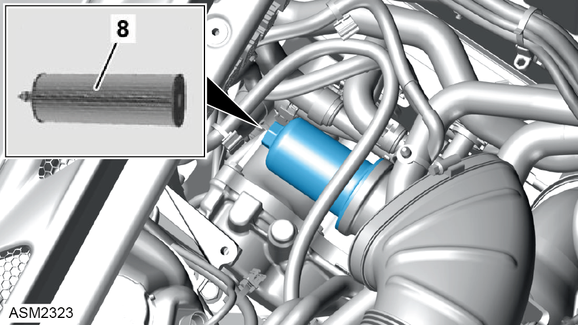

Oil Filter Element - 4 Cylinder
Print
Operation Code: 47.02.12-02
Removal
- Remove engine cover. Refer to procedure.

- Remove oil filter cap from oil pan. Torque 25 Nm.
NOTE: Be prepared to catch any excess hydraulic oil.
NOTE: Remove and discard oil filter cap sealing ring.
- Remove oil filter element (8).
Installation
- Installation is the reverse of removal procedure except for the following:
- Renew oil filter cap sealing ring.